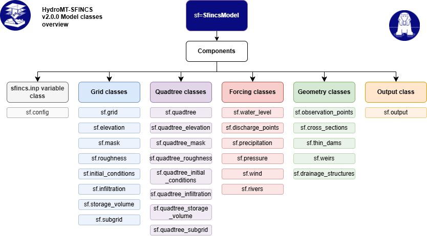

Model Components#
The SfincsModel consists of several components that together
represent the full SFINCS model setup. Each component manages a specific part of the
model (e.g., configuration, grid definition, forcings, or output) and can be read from or
written to disk using the corresponding read() and write() methods. Furhermore,
each component has its own data attribute that stores the relevant data for that component,
and a create() method to generate or update the component data (see also Model Methods).
An overview of all model components is presented in HydroMT-SFINCS workflow diagram, and each component will be introduced in the following sections. For more details about each component, see the SFINCS documentation.


HydroMT-SFINCS workflow diagram#
Configuration component#
The configuration component manages the main SFINCS configuration settings and parameters. Only files or settings that are mentioned in the configuration file will be used by the SFINCS model.
Component |
Description |
Associated Files / Relations |
|---|---|---|
Model configuration settings and parameters. |
|
Renamed keywords and SFINCS versions#
Some sfincs.inp keywords were renamed in newer SFINCS versions, for example wvmfile
became wavemaker_wvmfile. HydroMT-SFINCS stores each setting under its current name. The
old name is a legacy alias: you can still use it when reading a file or calling
config.set() and config.get(). Each legacy alias records the last SFINCS version in
which it was the keyword.
By default, what is read is what is written: HydroMT-SFINCS remembers the keyword each setting was read or set with, and writes the setting back under that keyword. A keyword is only changed, always with a warning, when:
the file has a
sfincs_versionthat does not read the keyword. The keyword is then replaced by the one that version reads (for examplewvmfilebywavemaker_wvmfileforsfincs_version = 2.5.0), or removed if that version does not know the setting;the file has no
sfincs_versionand the keyword is older than the minimum supported SFINCS version (for examplecrs, which is replaced byepsg).
Without sfincs_version the targeted SFINCS version is unknown, so settings that are
deprecated in newer versions (for example storeqdrain) are kept without a warning. With
sfincs_version, settings that version does not support are removed with a warning.
Writing does not update a model to a newer SFINCS version: update_to_latest is False
by default, also when the model is written with model.write(). To update a model to the
latest SFINCS version, write the config with update_to_latest=True:
model = SfincsModel(root="old_model", mode="r")
model.read()
model.root.set("updated_model", mode="w+")
model.write()
model.config.write(update_to_latest=True)
This writes the current keywords, leaves out deprecated settings and writes
sfincs_version. The configuration in memory is not changed. New models always get the
latest sfincs_version. A model that was read without sfincs_version only gets one when
it is written with update_to_latest=True.
flowchart TD
subgraph READ["Reading sfincs.inp"]
R0["Keyword in file<br/>e.g. 'wvmfile' or 'wavemaker_wvmfile'"] --> R1{"Is it an old name<br/>of a setting?"}
R1 -- yes --> R2{"Current name, or an old name the<br/>kernel reads first, also in the file?"}
R2 -- yes --> R3["This name ignored<br/>warning"]
R2 -- no --> R4["Stored under the current name,<br/>keyword remembered"]
R1 -- no --> R6
R4 --> R6{"Known setting?"}
R6 -- no --> R7["Kept and rewritten as is<br/>warning: unrecognized key"]
R6 -- yes --> R8{"sfincs_version<br/>in file?"}
R8 -- no --> R13{"Keyword older than the<br/>minimum supported version?"}
R13 -- no --> R12["Keyword kept"]
R13 -- yes --> R14["Replaced by the current name<br/>warning"]
R8 -- yes --> R9{"Keyword read by<br/>this version?"}
R9 -- yes --> R12
R9 -- no --> R10{"Another keyword read<br/>by this version?"}
R10 -- yes --> R15["Replaced by that keyword<br/>warning"]
R10 -- no --> R11["Removed<br/>warning: not supported"]
end
subgraph SETGET["config.set() / config.get()"]
S0["Old or current name"] --> S1["Stored under the current name,<br/>keyword checked as when reading"]
end
R12 --> M[("Model configuration<br/>with the keyword per setting")]
R14 --> M
R15 --> M
R7 --> M
S1 --> M
subgraph WRITE["Writing sfincs.inp"]
M --> W0{"update_to_latest?"}
W0 -- no --> W1["Written under the keyword<br/>it was read or set with"]
W0 -- yes --> W2["Written under the current name,<br/>deprecated settings left out,<br/>sfincs_version written"]
end
The diagram leaves out the general write rules: a setting is only written when it has a value, and only when it differs from its default, was set explicitly, or is always required.
Regular grid components#
These components define the model grid and its physical parameters for SFINCS models on regular grids. The different components are interrelated, since they all share the same spatial grid definition.
Component |
Description |
Associated Files / Relations |
|---|---|---|
Base model grid. |
|
|
Elevation (bathymetry/topography). |
|
|
Active domain and boundary mask. |
|
|
Manning’s n roughness. |
|
|
Infiltration capacity. |
|
|
Initial water levels. |
|
|
Storage volume to account for green infrastructure. |
|
|
Subgrid table with cell-specific elevation and roughness data. |
|
Note
Please be aware that the indexfile is not describing a grid variable.
Instead, it is generated during the writing process based on the mskfile,
and it is utilized for the purpose of reading grid variables in binary files.
Geometries and structures#
These model components manage vector-based geometries and structures within the SFINCS model, such as observation points to monitor water levels at specific locations or weirs to represent flow control structures.
Component |
Description |
Associated Files / Relations |
|---|---|---|
Observation points for validation. |
|
|
Cross-section definitions. |
|
|
Weir locations and parameters. |
|
|
Thin dams and barriers. |
|
|
Drainage infrastructure. |
|
Forcing components#
These components handle time-varying boundary and meteorological forcings applied to the model, such as water level boundaries, discharge sources, precipitation, wind, and atmospheric pressure.
Component |
Description |
Associated Files / Relations |
|---|---|---|
Water level boundary conditions. |
|
|
Discharge source terms. |
|
|
Spatially and/or temporally variable rainfall. |
|
|
Spatially and/or temporally variable wind forcing. |
|
|
Atmospheric pressure fields. |
|
|
River network and flow attributes. |
|
Note
The rivers component is not directly used by the SFINCS model,
but it can be helpful for setting up discharge boundary conditions based on river network data.
Output component#
Component |
Description |
Associated Files / Relations |
|---|---|---|
Model simulation results |
|